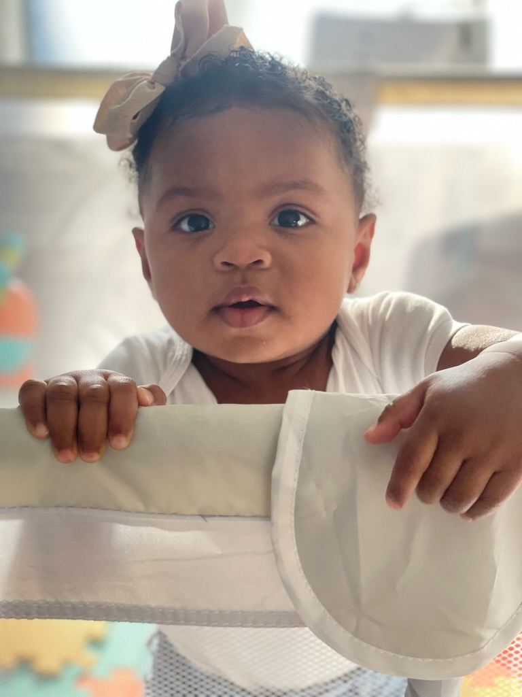
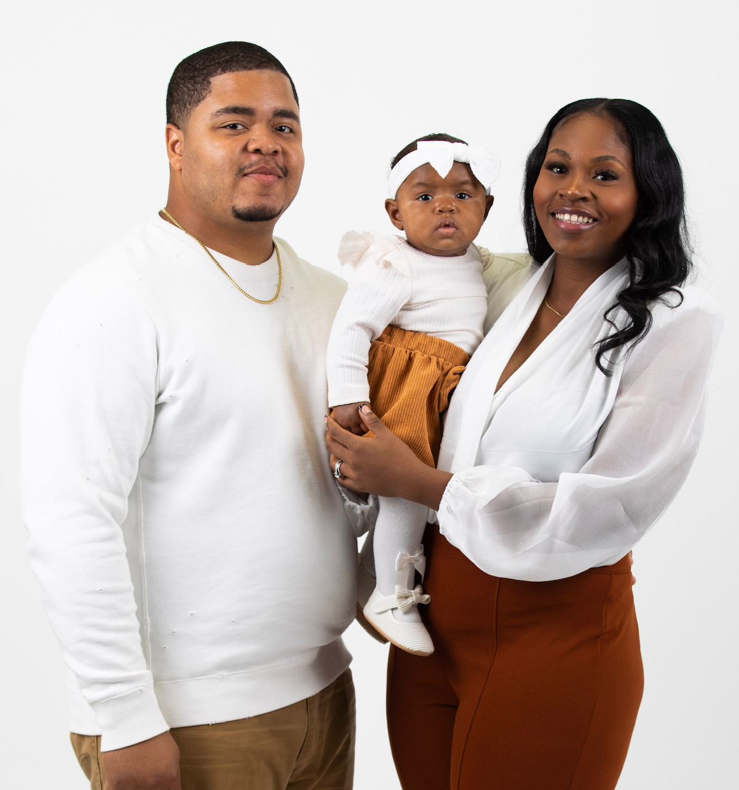
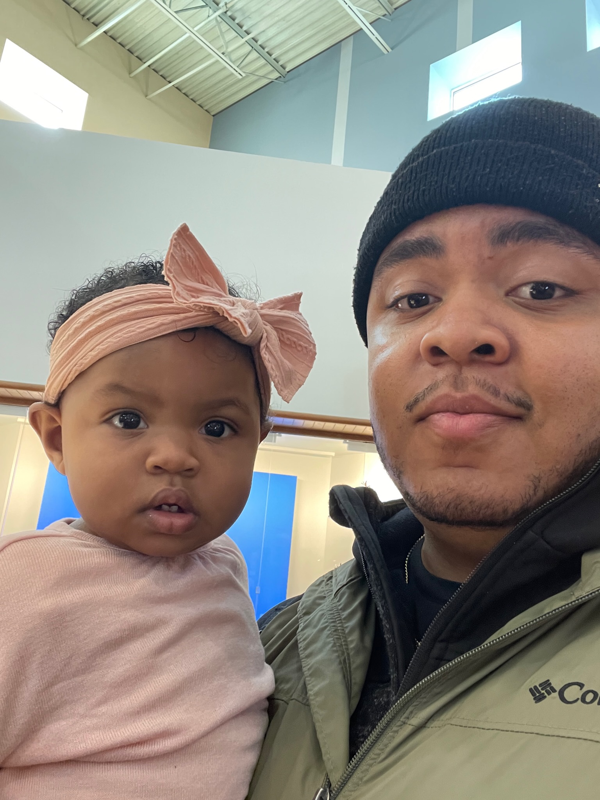

Living The Dream: Fatherhood Edition
Donovan Wilkerson April 11, 2023, Web droid Binary Coding Class Spring 2023
I was introduced to this passion officially on May 14, 2022 when my daughter Imarah was born. Since early childhood, I was fascinated with family chemistry and motivated by my strong and tight knit family. Even as a youngster I knew that I wanted to start my family legacy and being a father was a top priority. Today I am inspired by my own parents, who have always done what they can do to support me. My Mom: a strong minded and stern woman that sets the bar for the standard of conduct and behavior. My Dad: A hard working and integral man who is a constant reminder to do things right the first time and to reach down and lift others up. I am also inspired by the other fathers I meet who share valuable experiences and virtues.
  My First Born: Imarah Rose Wilkerson
May 14, 2022 @ 10:57pm Imarah Rose Wilkerson was born 8lbs 3oz and 20 inches longFun Fact: My wife and I deferred the gender reveal until the delivery and were surprised to welcome a baby girl into the world!
Her favorite foods are black beans and cheerios
Her favorite show is Ms. Rachel on youtube
She loves to greet everyone with a warm "Hello" or "Hi"
Dads Set The Tempo
"When things go left, don't go with them"- Elvis Presley
Just like the point guard of a basketball team, quarterback of the football team, and the pitcher of a baseball team; Dads set the tempo. As a first time parent, I am always very cautious and careful but things can unexpectantly go wrong. As a father there is no room for panic or fear because if things do go wrong (and they will) mom and baby look to you first before they even comprehend what is happening. It is best to stay calm and collected in order to be decisive and use the best judgement so you can be the leader your family needs in a stressful situation.Lead By Example
I am sure we have all heard some sort of adult figure in our lives say "do as I say, not as I do" as a justification for their bad behavior. I have quickly learned already that saying will not work. Whether it is something my wife and I say or do, our daughter is right there to witness, learn and repeat almost everything.
To stay up-to-date on information and articles about fatherhood and parenting related topics, visit fatherly.com
Inspirational Black Fathers
-
Dr. Cliff Huxtable

Dr. Heathcliff Huxtable is a fictional character and the main protagonist of the NBC sitcom The Cosby Show. Cliff is the Huxtable family patriarch who is very eccentric and silly to most people around him, especially his family. At his core, he is a very kind and gentle man and an extremely dedicated father with a strong sense of humor.
-
Judge Phillip Banks

Philip Banks is the father of the show Fresh Prince of Bel-Airb. Throughout most of the series, he is depicted as a very strict, commanding, orderly, and lawful man. Being the patriarch of the Banks' household, he is seen to be very caring towards his children. However, while he is caring, he is undeniably very strict with his children, holding his children up to very high standards, and is seen to be disappointed with them when they do not live up to these expectations.
-
President Barack Obama

Barack Obama is the 44th President of the United States of America as well as a father to two daughters. One could imagine how difficult being a dad and the president might be but president Obama did it with skill, style and grace.
| Subject/Topic | Resource | Link |
|---|---|---|
| Inspiration: Barck Obama | Wikipedia.com | |
| Inspiration: Dr Huxtable | Wikipedia.com | |
| Inspiration: Uncle Phil | Fandom.com | |
| Fatherhood Resources | Fatherly.com |